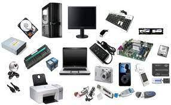
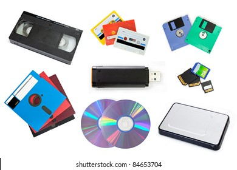

Perangkat Keras Jaringan Komputer
Pengertian Hardware atau Perangkat Keras Komputer
Pengertian hardware atau perangkat keras komputer adalah semua jenis piranti atau komponen komputer yang bagian fisiknya dapat dilihat secara kasat mata dan dirasakan langsung. Menurut pendapat ahli James O’Brien, pengertian hardware merupakan semua komponen/peralatan fisik yang digunakan dalam pemrosesan informasi seperti CPU, RAM, monitor, mouse, keyboard, printer, scanner, dan lain-lain. Biasanya, hardware terlihat sebagai bentuk output dari setiap proses sistem operasi komputer. Namun tentu saja, perangkat keras harus dibantu dengan software pendukung agar perintah yang ada dalam komputer dapat dioperasikan baik
Fungsi Hardware Atau perangkat Keras Secara Umum
Setelah tau pengertian hardware, kamu harus tau juga apa fungsi hardware atau perangkat keras secara umum dalam sebuah sistem operasi komputer. Adapun fungsi hardware yaitu untuk mendukung kerja komputer, menampilkan atau menerima input (masukan) proses, mengolah data/informasi, memberikan output, serta menyimpan data/informasi yang terpasang di dalam maupun di luar komputer.
Jenis Jenis Hardware Berdasarkan Fungsi
Jenis hardware umumnya dikelompokkan berdasarkan fungsi setiap hardware. Berikut ini ulasan jenis hardware menurut fungsi atau kegunaannya:
- Input Device (perangkat input/masukan)

Jenis perangkat keras komputer ini berfungsi untuk memasukkan data atau informasi (dalam bentuk teks, gambar, video, dan audio) ke komputer. Beberapa contoh hardware yang termasuk input device seperti keyboard, mouse pen, microphone, webcam, joystick, dan lain-lain.
- Process Device/Hardware (perangkat proses)

Sesuai namanya, perangkat keras jenis process drive berfungsi untuk mengolah data dan menjalankan proses pada sistem komputer. Contoh process device yaitu CPU, RAM, VGA, dan sebagainya.
- Output Device (perangkat output/keluaran)

Yang ketiga, ada jenis hardware untuk mencetak dan menampilkan informasi dari hasil input data. Untuk data tersebut berasal dari hardware input setelah hardware process. Contoh: speaker, monitor, dan printer.
- Storage Device (perangkat untuk menyimpan)

Storage device merupakan perangkat keras komputer yang berfungsi sebagai media penyimpanan, berguna untuk menyimpan data-data komputer. Contohnya, hardisk, floppy disk, CD/DVD, dan flashdisk.
Beberapa Contoh Hardware dan Pengertiannya
- Motherboard

Motherboard (atau biasa disebut mainboard, systemboard, logic board, baseboard atau mobo) merupakan sebuah printed circuit board (PCB) yang bertindak sebagai tulang belakang pada sebuah komputer, sebab motherboard menyediakan sebuah konektivitas elektrik yang disebut bus sehingga semua komponen dan perangkat eksternal pada motherboard tersebut dapat terhubung. Fungsi utamanya yaitu sebagai media yang menampung komponen pada komputer.
- Power Supply

Pengertian Power Supply adalah salah satu hardware di dalam perangkat komputer yang berperan untuk memberikan suplai daya. Biasanya komponen power supplay ini bisa ditemukan pada chasing komputer dan berbentuk persegi.Fungsi dari power supply adalah memberikan daya arus listrik ke berbagai komponen atau hardware yang terdapat di dalam chasing komputer.
- Mouse

Mouse adalah salah satu hardware komputer yang menerima input-an berupa gerakan, tekanan tombol (click), dan penggulungan (scroll) yang dapat digunakan untuk memilih teks, ikon, file, dan folder. Mouse dalam Bahasa Indonesia diterjemahkan sebagai “tetikus”. Dikatakan demikian karena memang bentuk device ini menyerupai tikus yang kecil meruncing di depan dan menggembung besar di bagian belakang.
- Monitor
Monitor adalah perangkat keras komputer yang berfungsi untuk menampilkan hasil proses dari komputer dalam bentuk teks, gambar, ataupun video secara visual. Dalam hal ini monitor berperan sebagai perangkat output penyusun sebuah komputer dan sebuah komputer takkan bisa digunakan jika monitornya tidak ada. Itulah alasan mengapa monitor dianggap sangat penting dalam sebuah komputer.
- Prosesor
Prosesor adalah komponen utama atau otak dari laptop / komputer Anda. Prosesor terletak tepat di tengah motherboard. Prosesor memiliki fungsi yang penting bagi seluruh operasi perangkat komputer karena semua perintah dimulai dari processor. Maka dari itu, memilih prosesor terbaik untuk mendukung pekerjaan menggunakan komputer atau laptop sangat penting bagi pengguna. Mulai dari pekerjaan sederhana seperti menulis, membalas e-mail, berselancar di internet, main game, dan mengolah grafis semua dilakukan dengan komputer atau laptop
- Random Acces Memory
RAM adalah suatu hardware yang ada di dalam komputer sebagai tempat penyimpanan data sementara (memori) dan berbagai instruksi program. RAM kepanjangan dari Random Acces Memory. Data di dalam RAM bersifat sementara yang berarti dapat hilang ketika komputer dinon-aktifkan atau daya listrik ke power supply dicabut dari perangkat.
- Keyboard

Keyboard adalah sebuah perangkat keras (hardware) pada komputer yang berfungsi sebagai alat untuk input data yang berupa huruf, angka dan simbol. Atau definisi keyboard yaitu suatu perangkat keras pada komputer yang berbentuk papan dan memiliki berbagai macam tombol yang dimana tombol tersebut fungsinya berbeda tergantung pada penekanannya yang bisa menghasilkan proses yang sesuai dengan keinginan penggunanya.